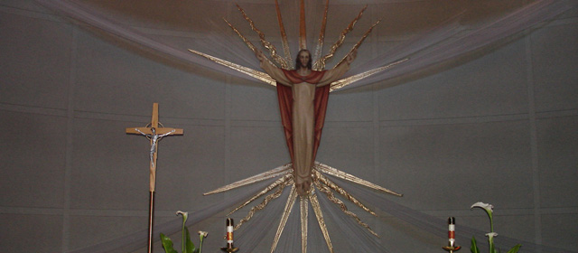

Where All Are Welcome
Call the Parish office : (916) 985-2065
Children and Youth Faith Formation (Religious Education)

Welcome to St. John the Baptist Catholic Church!
Mission
Faith formation is a primary goal at St. John the Baptist Parish. We are a faith community committed to learning and serving together with Christ. We provide extensive opportunities to learn more about our Catholic faith and serve God and our community.
Faith formation is a life-long journey. Through evangelization and catechesis, the church works to bring initial conversion, and to lead the believer to a more mature faith and a life in Christ. In this journey, all are welcome.
Our Goals for Children and Youth
- Provide the basics of our shared Catholic faith for children who do not attend Catholic school
- Prepare children of all ages to receive the sacraments
- Prepare non-baptized children for reception into the church
- Integrate our young people into the active life of the parish
- Enable parents to be the first and best teachers of their children
- Provide adult enrichment to those parishioners who seek to understand more about their faith and themselves
Class Time
- Sunday, 10:25-11:20 AM
- Monday, 5:00-6:00 PM
- Tuesday 4:30-5:30 PM
- Tuesday 6:00-7:00 PM